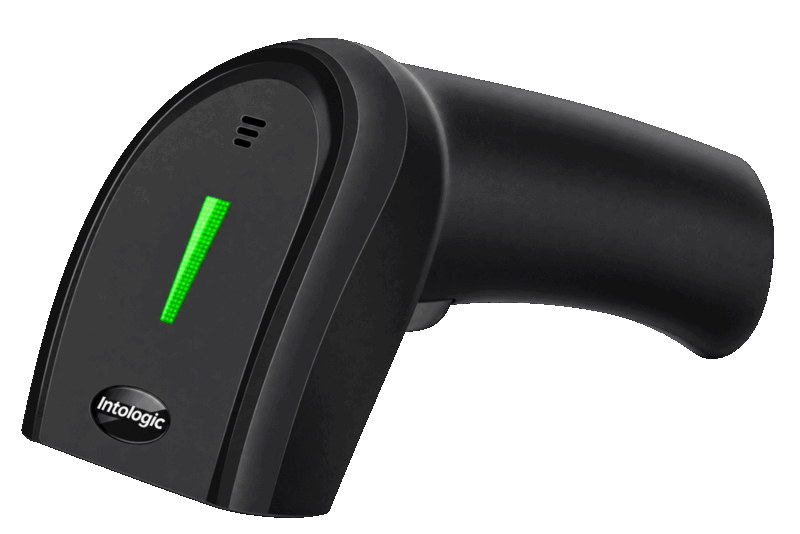
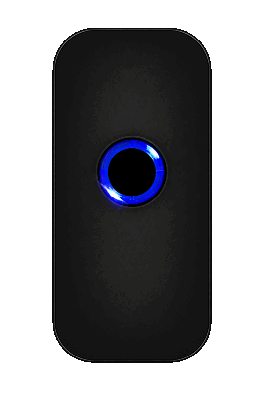
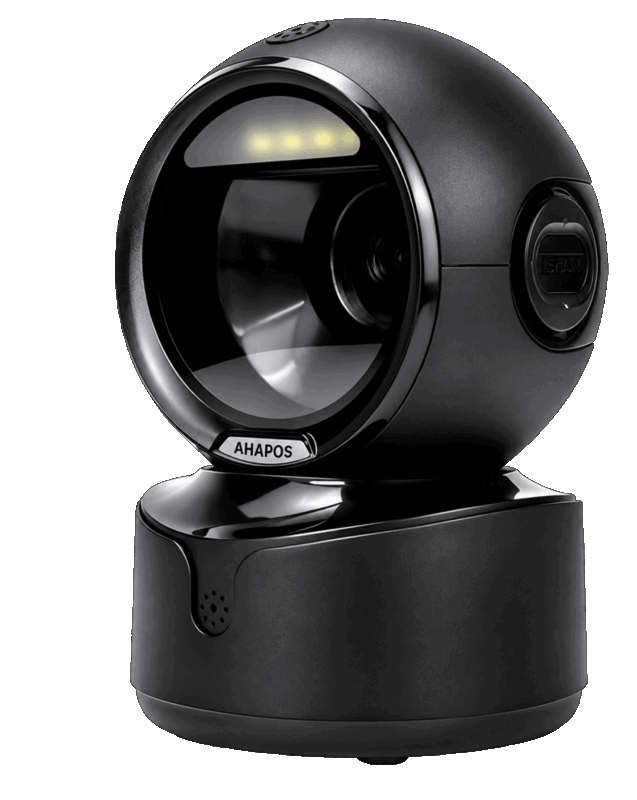

01

INTOLOGIC · 1D USB TYPE
BIZONE-1100
USB 연결 방식의 1D 핸드형 바코드 스캐너입니다. 간편한 연결과 안정적인 인식 성능으로 일반 매장과 사무 환경에서 편리하게 사용할 수 있습니다.
주요 특징1D 바코드USB 연결핸드형
BARCODE SCANNER
유선·무선 핸드형부터 휴대형과 탁상형까지, 매장과 업무 환경에 맞는 스캐너를 선택할 수 있습니다.

INTOLOGIC · 1D USB TYPE
USB 연결 방식의 1D 핸드형 바코드 스캐너입니다. 간편한 연결과 안정적인 인식 성능으로 일반 매장과 사무 환경에서 편리하게 사용할 수 있습니다.
INTOLOGIC · 1D, 2D WIRELESS TYPE
1D·2D 바코드와 QR코드를 인식하는 무선 핸드형 스캐너입니다. 케이블 제약 없이 사용할 수 있어 상품 등록과 재고 관리 업무에 적합합니다.

INTOLOGIC · 1D, 2D BLUETOOTH TYPE
휴대가 간편한 블루투스 바코드 스캐너입니다. 1D·2D 바코드와 QR코드를 지원하며 스마트폰과 태블릿 등 모바일 기기와 연동해 사용할 수 있습니다.

INTOLOGIC · 1D, 2D USB TYPE
탁상형 바코드 스캐너로 QR코드 리딩 용도로 편의점, 일반 매장, 교회, 성당 등에서 주로 사용합니다.
PRODUCT CONSULTING
매장 형태와 사용 환경을 확인해 알맞은 제품을 안내해드립니다.